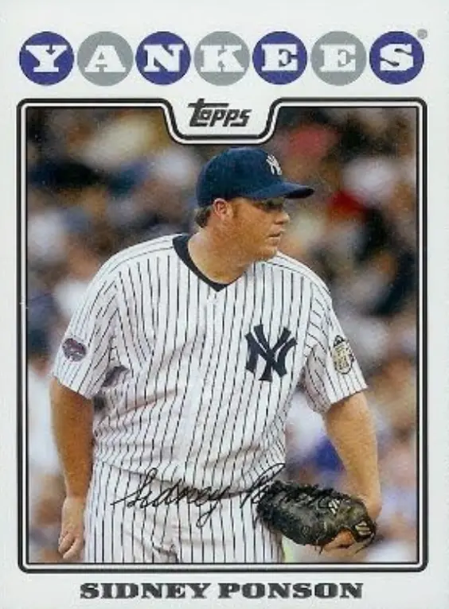

Sidney Ponson "The Count"
Career Highlights & Facts
(Facts are AI-generated and may require verification)
- Decorated as a Knight in the Order of Orange-Nassau.
- Possessed a fastball that reached 95 mph.
- Represented one of the first 3 individuals from a Caribbean island nation to reach the major leagues.
Would you like to find out more about Sidney Ponson?
Player Biography
Sidney Ponson January 4, 2012 / in BioProject - Person / by admin This bio is not assigned. Want to write a SABR bio? Contact bioproject@sabr.org . No items found Full Name Sidney Alton Ponson Born November 2, 1976 at Noord, (Aruba) Stats Baseball Reference Retrosheet If you can help us improve this player’s biography, contact us . Tags None Share this entry Share on Facebook Share on X Share on LinkedIn Share on Reddit Share by Mail
Wikipedia Summary:
Sidney Alton Ponson is an Aruban former Major League Baseball pitcher. As a player, Ponson stood at 6 ft 1 in (1.85 m) tall and weighed 260 lb (120 kg). He threw right-handed with a fastball that clocked out at 95 mph. When he made his major league debut for the Baltimore Orioles in 1998, he became the third player from Aruba to play in the major leagues. In 2003, he was decorated as a Knight in the Order of Orange-Nassau, along with fellow Aruban former Baltimore Orioles players Eugene Kingsale and Calvin Maduro.
Career Totals
| WAR | W | L | ERA | G | GS | SV | IP | SO | WHIP |
|---|---|---|---|---|---|---|---|---|---|
| 11.1 | 91 | 113 | 5.03 | 298 | 278 | 1 | 1760.1 | 1031 | 1.484 |
Statistics via Baseball-Reference.com
The Original Clue